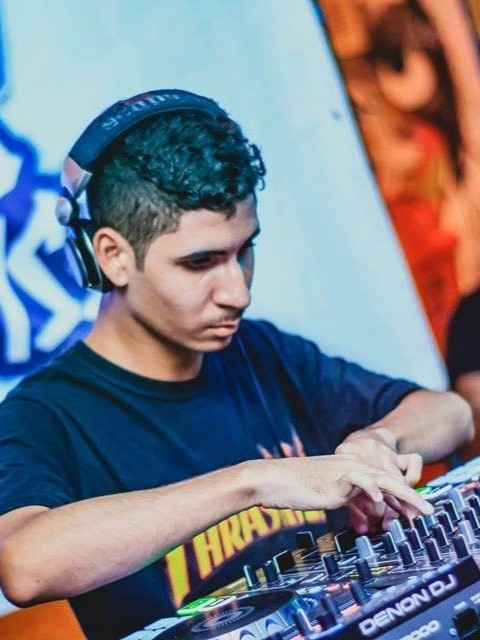
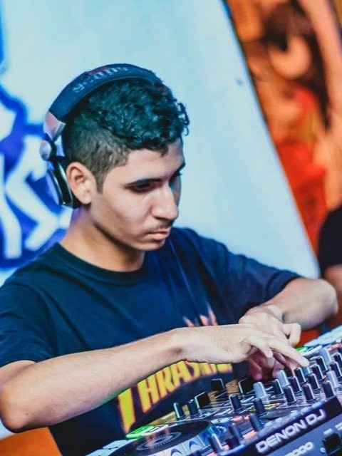

A trajetória de DJ Rapha é marcada por sua versatilidade e presença de palco, consolidando-se como um dos nomes mais completos do cenário Open Format no Rio de Janeiro. Com mais de 10 anos de experiência, Rapha domina a arte de mesclar gêneros musicais com fluidez — transitando entre Funk, Pop, Eletrônica, Hip-Hop e muito mais — criando experiências únicas que se conectam com diferentes públicos e momentos. Seu estilo Open Format o tornou um nome requisitado em clubes, eventos corporativos, festas privadas e festivais, sempre com sets dinâmicos que transformam a pista em um ambiente vibrante e imprevisível. Ao longo da carreira, DJ Rapha construiu uma identidade musical marcada por feeling de pista, técnica refinada e leitura apurada do público. Atualmente, DJ Rapha segue expandindo sua atuação na cena nacional, levando sua assinatura sonora a novos palcos e consolidando sua presença como artista. Um som pra cada vibe, uma vibe pra cada pista.
DJ Rapha's journey is defined by his versatility and stage presence, establishing himself as one of the most complete names in the Open Format scene in Rio de Janeiro. With over 10 years of experience, Rapha masters the art of blending musical genres with fluidity — moving between Funk, Pop, Electronic, Hip-Hop and much more — creating unique experiences that connect with different audiences and moments. His Open Format style has made him a sought-after name in clubs, corporate events, private parties and festivals, always with dynamic sets that turn the dance floor into a vibrant and unpredictable environment. Throughout his career, DJ Rapha has built a musical identity marked by dancefloor feeling, refined technique and a sharp reading of the crowd. Currently, DJ Rapha continues to expand his presence on the national scene, bringing his sonic signature to new stages and consolidating his presence as an artist. One sound for each vibe, one vibe for each dance floor.
La trayectoria de DJ Rapha está marcada por su versatilidad y presencia escénica, consolidándose como uno de los nombres más completos de la escena Open Format de Río de Janeiro. Con más de 10 años de experiencia, Rapha domina el arte de mezclar géneros musicales con fluidez — transitando entre Funk, Pop, Electrónica, Hip-Hop y mucho más — creando experiencias únicas que conectan con diferentes públicos y momentos. Su estilo Open Format lo ha convertido en un nombre solicitado en clubes, eventos corporativos, fiestas privadas y festivales, siempre con sets dinámicos que transforman la pista en un ambiente vibrante e impredecible. A lo largo de su carrera, DJ Rapha ha construido una identidad musical marcada por el feeling de pista, técnica refinada y una lectura aguda del público. Actualmente, DJ Rapha sigue expandiendo su actuación en la escena nacional, llevando su firma sonora a nuevos escenarios y consolidando su presencia como artista. Un sonido para cada vibra, una vibra para cada pista.